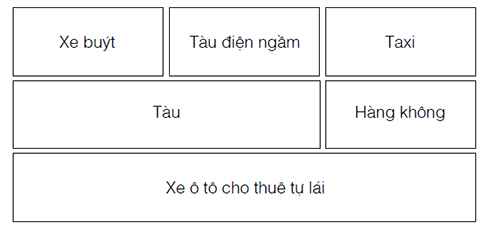

Bờ biển... bàn tay của gã... gần như dập nát. Con nhện nhảy múa ngập ngừng, như thể nó cũng đã nuốt phải nhiều nước như người chị em của nó.
Albion đã mất chiến hạm còn Nerron thì suýt mất điệp viên tám chân của mình, nhưng may mắn là nhện sinh đôi dẻo dai hơn những con tàu đóng từ gỗ và sắt. Reckless gặt được thành quả không tồi, nếu người ta tin vào tin nhện. Lửa bốc lên từ bầu trời... nước... khói... cái chết. Nerron chỉ có thể cố hết sức để hiểu xem chuyện gì đã xảy ra, nhưng rốt cuộc chỉ có hai việc khiến gã quan tâm: cuộc tấn công của người Goyl càng làm cho chiếc nỏ hấp dẫn hơn trong mắt những đối thủ của họ và Reckless đã quay về đại lục thành công - với cái thủ cấp.
Ồ, cuộc đua này vui đây. Kể cả nếu bây giờ Hoàng Tử Bé đang giữ bàn tay. Vừa nhắc đã đến... tiếng gõ lên cửa phòng Nerron nghe vẻ như của một kẻ nào đó không quen đứng trước những cánh cửa đóng kín. Nerron xua con nhện vào lại tấm mề đay rồi mở cửa.
“Ngươi nhìn đi!” Louis gí ống tay áo sơ mi bạc màu vào mặt Nerron. “Trong cái nhà nghỉ này bọn họ còn không thể giặt quần áo! Ngươi nghĩ phụ thân ta sẽ nói gì nếu ta đánh điện về cho ông ấy bảo rằng sáng nay Lelou phải bắt chấy trên tóc cho ta?”
Nerron tưởng tượng ra cảnh gã sẽ làm một cái đèn chùm từ xương của Louis như thế nào. Trí tưởng tượng là một món quà tuyệt vời.
“Chúng ta đi tìm gì tiếp theo đây?” À há. Hắn đã nếm thấy máu. Nỗi thèm khát đi săn... Louis có quá nhiều kẻ cắp hoàng tộc trong dòng họ hắn để trở nên miễn dịch với điều đó.
“Gọi hai người kia rồi gặp tôi sau dãy chuồng ngựa.”
Nerron định đóng cửa lại nhưng Louis đã kịp chèn đôi ủng đắt tiền của mình vào giữa. “Ngươi không phải là kẻ thích nói nhiều, Goyl. Ta tin rằng ngươi không nói cho chúng ta tất cả những gì ngươi biết về cuộc tìm kiếm này.”
Tại sao ta phải làm vậy chứ, Hoàng Tử Bé? Để cho ngươi hay cha ngươi nảy ra ý đi tìm chiếc nỏ một mình sao?
“Hỏi Lelou ấy. Ông ta chắc chắn biết nhiều hơn tôi,” gã đáp trả. “Còn về mấy con chấy, sao các người không đề nghị với chủ quán trọ miễn phí hóa đơn tiền rượu cho các người?”
Louis véo cái trán mỡ, chán ghét vần vò nó giữa những ngón tay.
“Được thôi,” hắn nói rồi rút ủng ra khỏi cửa. “Sau dãy chuồng. Nhưng nhớ lấy. Ta không thích chờ đợi!”
Dĩ nhiên Nerron là kẻ phải đợi. Chắc hẳn bọn họ đã bắt thêm được vài con chấy. Thật kỳ diệu là nước hoa Eau de Toilette mà Louis dùng không giết chết tất cả bọn chúng ngay lập tức. Eaumbre yên lặng lê bước sau lưng thân chủ dòng dõi hoàng tộc của hắn, trong khi Lelou vẫn huyện thuyên không kịp thở với Louis như thường lệ. Lão chỉ chịu câm miệng khi trông thấy Nerron đứng cạnh mấy con ngựa đã thắng yên cương.
“Lelou nói ngươi đã kể với ông ta rằng chúng ta còn phải đi tìm một quả tim và một cái đầu để nhận được chiếc nỏ đúng không?” Louis đeo chiếc-túi-giấu-đồ với bàn tay trong đó nơi thắt lưng mạ vàng. Hắn mân mê chiếc túi như thể muốn nhắc rằng, cho tới lúc này, không phải Nerron, mà chính hắn mới là tay săn kho báu thành công.
Tên quý tộc ngu ngốc.
Nerron mỉm một nụ cười ngây thơ với hắn.
“Vâng, đúng vậy, gã nói.” Tốt hơn hết là để Lelou có ấn tượng rằng lão biết mọi chi tiết về chuyến đi săn. Bằng cách đó sẽ ngăn được lão Bọ đặt quá nhiều câu hỏi. Nhưng giờ đã đến lúc đi chệch khỏi sự thật một chút.
Gã sắm bộ mặt ra vẻ quan tâm. “Đáng tiếc tôi nghe nói rằng một tên gián điệp của Albion đã lấy được thủ cấp. Cho đến khi chúng ta đuổi kịp hắn bằng xe ngựa hay tàu hỏa, hắn cũng đã tìm được quả tim ở đâu đó rồi. Vì vậy tôi đề nghị chúng ta dùng phép thuật để ngăn hắn lại.”
Louis nhướng vầng trán dô.
“Albion. Lại là Albion,” hắn gầm gừ. “Cha ta đã quá thân thiện với chúng.”
Lelou sờ cái mũi nhọn hoắt. “Tôi đã từng di chuyển bằng phép thuật một lần. Thật là có hại cho sức khỏe. Sau đó cái bóng của tôi còn trò chuyện với tôi nữa chứ!”
Nerron lôi ra một cái túi da từ yên ngựa. “Đừng lo. Người Goyl chúng tôi dùng một loại phép thuật không để lại tác dụng phụ đâu.” Gã cũng không thật sự biết liệu điều đó có đúng với con người không, nhưng dĩ nhiên là gã không nhắc đến.
Cái túi chứa thứ đất mà Nerron đã lấy ở trước thang nâng trong hầm mỏ nơi lăng mộ Guismund được tìm thấy. Gã chắc chắn dấu ủng để lại trên mặt đất là của Reckless. Lelou nghi ngờ quan sát Nerron trải đám đất ra trên một phiến đá bằng phẳng. Thật là một dịp hiếm có để thoát khỏi cả ba người bọn họ! Trong một giây gã không thể cưỡng lại ý muốn đó. Nhưng Louis giữ bàn tay còn những hiểu biết của Lelou có thể có ích cho cuộc săn tìm quả tim. Còn nam nhân ngư thì sao, Nemon? Ánh mắt gã quét nhanh qua Eaumbre. Bản năng mách bảo gã rằng Eaumbre có thể vẫn còn có ích, dù chỉ để thay gã giết hai kẻ còn lại.
“Đây... khá đơn giản. Miễn là các người làm theo lời tôi nói.” Nerron nôn nóng vẫy họ đến cạnh gã. “Dây cương bên trái và tay phải đặt trên vai người đứng trước.”
Lelou phải nhón chân mới chạm được tới vai Louis, còn Hoàng Tử Bé mang găng tay da bê vào trước khi chạm vào nam nhân ngư, nhưng Eaumbre dùng những ngón tay tóm chặt vai Nerron như muốn nhắc nhở chúng có thể gây thương tích như thế nào.
Nerron giẫm ủng lên lớp đất mà vài ngày trước Jacob Reckless đã đứng trên đó - và ngửi thấy mùi muối trong không khí.
Nước.
Gã rùng mình.
Hy vọng nước không ngập đến cổ khi họ đáp xuống.